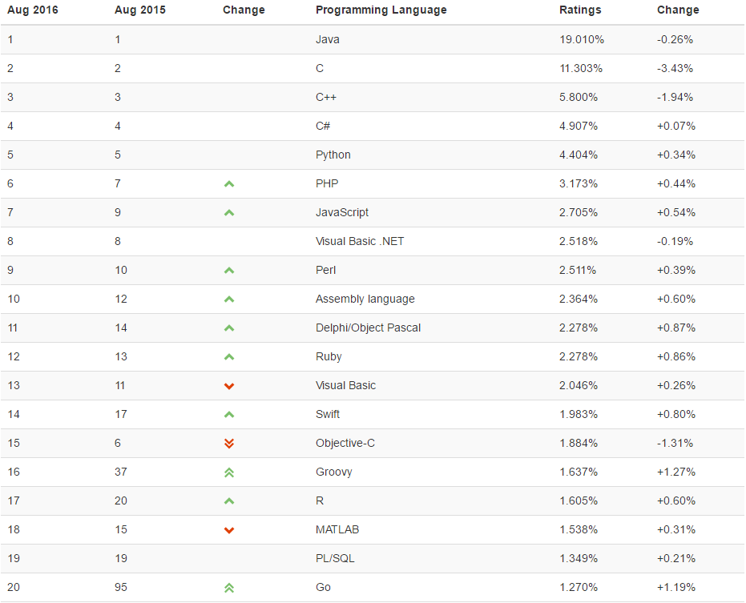
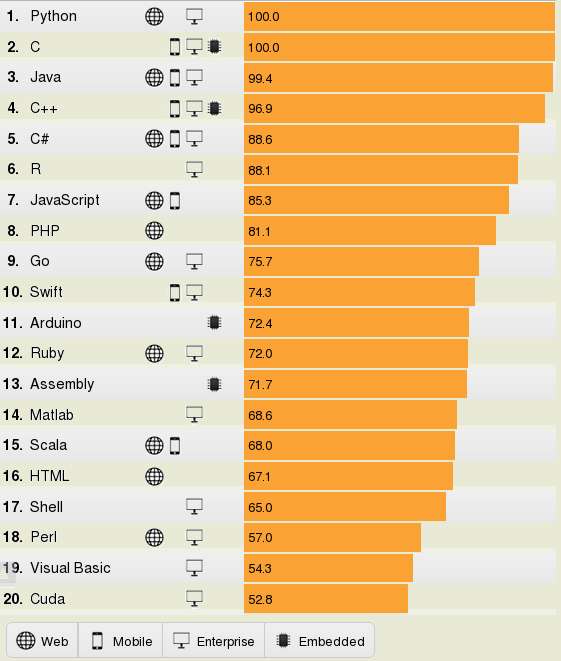
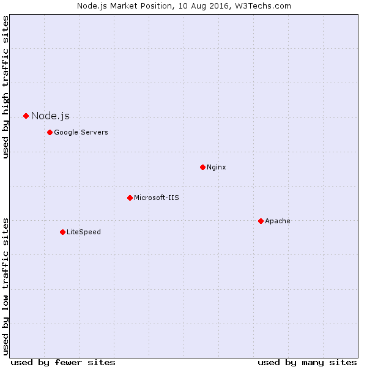

Программирование серверных кроссплатформенных приложений
Кроссплатформенность


С++
Исходный код | ||
Компиляция | Компиляция | Компиляция |
Приложение | Приложение | Приложение |
Linux | Windows | OS X |
Java / С#
Исходный код | ||
Компиляция | ||
Приложение | ||
Виртуальная машина | ||
Linux | Windows | OS X |
Кроссплатформенные
web-приложения ?
Web-приложения
- находятся на сервере
- backend + frontend
- backend-код выполняется на сервере
- frontend-код выполняется на клиенте
Кроссплатформенные
web-приложения
Но зачем ?
Технологии
ASP.NET Core
Node.js
Ruby on Rails
Java + фреймворк
PHP + фреймворк
Python + фреймворк
Технологии
ASP.NET Core
Node.js
Ruby on Rails
Java + фреймворк
PHP + фреймворк
Python + фреймворк
Node.js
Кратко
- Javascript + V8
- Асинхронный
- Событийно-ориентированный
- Однопоточный
- Не блокирующий
- Основная сфера: web-приложения
Создатель

История
- 2009: Первая версия, npm, JSConf
- 2010: Express, поддержка на Heroku
- 2011: NPM 1.0, LinkedIn, Uber
- 2012: Стабильная версия (0.8.х)
- 2013: MEAN-стэк, Koa
- 2014: Netflix, io.js
- 2015: Слияние в 4.x.x
Версионирование
Две ветки
6.x.x - Long Term Support
8.x.x - Current
Stability Index - Deprecated (0), Experimental (1), Stable (2), Locked (3)
Установка
- nodejs.org
- node --version
npm --version
Hello World!
Создаём index.js
const http = require('http');
const server = http.createServer((req, res) => {
res.end('Hello world!');
});
server.listen(2000, '127.0.0.1', () => {
console.log('Running');
});
Запускаем через консоль
node index.js
Открываем в браузере
http://127.0.0.1:2000/
Brave New World
with Node.js
Javascript на клиенте и сервере
- Общая кодовая база
- Вся команда легче ориентируется в проекте
Javascript и Node популярны



Оффициальный язык
open-source
На Github более 2,000,000 репозиториев
Из них 15% (300k+) - JS
NPM самый крупный open-source пакетный менеджер, 300k+ пакетов
Desktop + Mobile в подарок
Electron

Slack, Atom, Visual Studio Code
Ionic

Rio 2016, Euro 2016
Инструменты
- Visual Studio
- Visual Studio Code
- Atom
- WebStorm
- Sublime Text
- Brackets
Что почитать по JS
Вы не знаете JS
github.com/azat-io/you-dont-know-js-ru
Выразительный Javascript
github.com/karmazzin/eloquentjavascript_ru
JavaScript: сильные стороны
Слайды
Информация
Папка examples
Группа в Slack